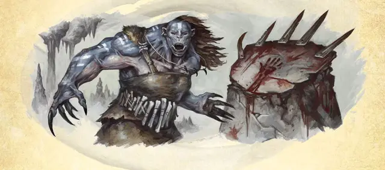

Орк коготь Лутик
Orc Claw of Luthic
Средний Гуманоид (Орк), хаотично-злой

Класс Доспеха 14 (шкурный доспех)
Хиты 45 (6к8 + 18)
Скорость 30 футов
| мод | спас | ||
|---|---|---|---|
| СИЛ | 14 | +2 | +2 |
| ЛОВ | 15 | +2 | +2 |
| ТЕЛ | 16 | +3 | +3 |
| мод | спас | ||
|---|---|---|---|
| ИНТ | 10 | +0 | +0 |
| МДР | 15 | +2 | +2 |
| ХАР | 11 | +0 | +0 |
Навыки Выживание +4, Запугивание +2, Медицина +4
Чувства тёмное зрение 60 футов, пассивное Восприятие 12
Языки Общий, Орочий
Опасность 2 (450 опыта)
Бонус мастерства +2
Среда обитания Горы, Подземье
Особенности
Агрессия. Бонусным действием орк может переместиться на расстояние не больше своей скорости к враждебному существу, которое может видеть.
Использование заклинаний. Орк является заклинателем 5-го уровня. Его базовой характеристикой является Мудрость (Сл спасброска от заклинаний 12, +4 к попаданию заклинаниями). У орка подготовлены следующие заклинания жреца:
• Заговоры (неограниченно): указание [guidance], починка [mending], сопротивление [resistance], чудотворство [thaumaturgy].
• 1 уровень (4 ячейки): порча [bane], лечение ран [cure wounds], направляющий снаряд [guiding bolt].
• 2 уровень (3 ячейки): гадание [augury], охраняющая связь [warding bond].
• 3 уровень (2 ячейки): проклятие [bestow curse], сотворение пищи и воды [create food and water].
Действия
Мультиатака. Орк совершает две атаки когтями или четыре атаки когтями, если у него осталось меньше половины хитов.
Когти. . Рукопашная атака оружием: +4 к попаданию, досягаемость 5 футов, одна цель. Попадание: 6 (1к6 + 2) рубящего урона.
Описание
Лутик – жена Груумша и образец материнства для всех орков. Она – Пещерная Мать, яростная обитательница темноты, которая помогает потомству орков стать злобными и сильными. Ее символ – пещерный медведь, и женщины орков выращивают таких медведей вместе с детьми орков. Женщины, особенно преданные Лутик, отращивают длинные ногти и лакируют их, учатся использовать ногти как оружие, так же как Лутик использует свои.
Женщины орки, которые чтят Лутик, руководят укреплением и поддержкой орочьих цитаделей. Они помогают гарантировать выживание племени, и у них самые лучшие навыки в лечебном искусстве. Самые сильные среди последовательниц Лутик – это когти Лутик, которые могут использовать магию Пещерной Матери для лечения, защиты и проклятия.
См. дополнительно статью: "Бестиарий: Орки"